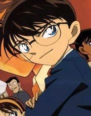
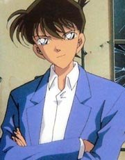
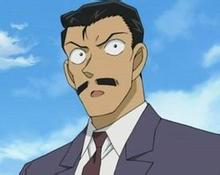
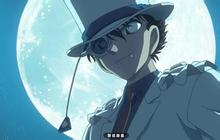

江户川柯南
原名：工藤新一
名句：真相永远只有一个！（真実はいつもひとつ！）（there is always just one truth！）
我是侦探，不是杀人犯；如果因为我的推理让犯人死去，那与杀人有什么两样；我自己也不会原谅自己。（侦探是不能让犯人死去的，这是原则）
犯罪手法终究是人类想出来的谜题而已...只要人类绞尽脑汁，还是可以导出一个逻辑性的答案。但杀人的理由，无论如何我都不会理解；即使理解了，也永远无法接受.
除去不可能的事，剩下的即使再不可能，但那也是真相！
性别：男
生日：5月4日
星座：金牛座
血型：a型
年龄：自称7岁（实际年龄17岁）
身高：120cm
体重：18kg
就读：帝丹小学1年级b班（帝丹高中2年级b班）
声优：高山南
偶像：夏洛克•福尔摩斯、雷•卡提斯
性格：自信、傲慢、谨慎、勇敢、机智
擅长：推理、足球、滑雪、溜冰、滑板、射击、拆卸炸弹、驾驶飞机（包括直升飞机)、骑脚踏车等等
不擅长：音乐 电玩 猜拳那方面的推理
口头禅：我叫江户川柯南，是个侦探！ 真相只有一个! 在推理过程很困难或找不到凶手的手法时会说“可恶”“等一下”
语言：日本语、english、deutsch（德语）
名字的由来：江户川•乱步、柯南•道尔
保护：毛利兰、灰原哀
初登场：002 董事长千金绑架事件
知道他真实身份的有：阿笠博士、他父母工藤优作，工藤有希子(听博士说的)、服部平次(与柯南一起破案过程中服部平次自己发现的)、怪盗基德(m3中发现 最后在紧要关头还“救”了柯南)、灰原哀(宫野志保，变小前奉黑衣组织之命调查新一时发现的)、宫野明美（柯南亲口承认，已死）、泽田弘树（诺亚方舟，第六部剧场版中与柯南玩时发现，通过dna检测，已死）、伊东未彦（第十部剧场版，通过指纹检测）、苦艾酒（贝尔摩得）vermouth（与新一的母亲是同事也是朋友，见过新一小时候)、本堂瑛佑(柯南自己承认的)。
他是故事里的男主角，“名侦探柯南”的灵魂人物。原名工藤新一，帝丹高中二年极学生，与小兰是青梅竹马。继承了父亲的超强推理能力，帮助警方破获了不少案子，被誉为“日本警察的救世主”。他喜欢看推理小说，最崇拜福尔摩斯，踢足球的水平一流，擅长凌空抽射。被卷入黑衣组织的交易被灌下毒药aptx4869，幸运的是并没有死，只是退化成了小孩，目前年龄定为7岁。改名为江户川柯南。智力没有衰退，推理能力丝毫未减。为了找出黑衣人的下落，寄住在家开侦探事务所的小兰家，一方面暗地协助小五郎破案。而体力上的不足靠阿笠博士的发明来弥补。变小后就读于帝丹小学1年级b班，认识了吉田步美、小岛元太、圆谷光彦三人，以及后来加入的灰原哀，成立了少年侦探团，是其中最重要的“首脑”。不管是变小前后，唱歌五音不全还是没有办法变更的事实……唱歌走音非常夸张。最常穿著的服装：红领结+蓝西装+短裤+球鞋。但现较少穿著) 受到许多同年龄的女孩们欢迎，人气和未缩小前不相上下！
有多次差点泄漏身分，但到最后总是千钧一发。知道他真实身份的有：阿利博士、他父母（听博士说的）、服部平次（与柯南一起破案过程中自己发现的）、怪盗Kid（与柯南的较量中自己发现的）、灰原哀（变小前奉黑衣组织之命调查新一时发现的）。名字的由来︰「江户川」乱步、「柯南」．道尔。
工藤新一

性别：男
生日：5月4日
血型：a型
年龄：17岁
身高：174cm
身份：帝丹高中二年级2班学生、高中生侦探
家住：东京都米花町2丁目21番地
职业：高中生侦探
家人：工藤优作（父亲）、工藤有希子(原名:藤峰有希子)（母亲）
青梅竹马：毛利兰
偶像：夏洛克•福尔摩斯、雷•卡蒂斯、莫里亚蒂
喜欢：毛利兰、《四签名》、柠檬派(特别是兰做的)、香菇、《跳舞的人像》(福尔摩斯中的作品）、《红发会》(福尔摩斯中的作品）。
外界称号：日本警察的救世主、平成年代的福尔摩斯（个人梦想）、关东的名侦探。
声优：山口胜平 （和基德的声优是一个人哦）
特长：足球、推理、射击、拥有绝对音感（在月影岛杀人事件中末尾柯南听出钢琴弹出的“谢谢你，小侦探”其实是青山刚昌忘记他是音痴了！
短处：音痴（唱歌的声音很可怕）
名句：真相永远只有一个!
对手：怪盗基德
敌人：黑暗组织
喜欢的书：《四签名》
讨厌的食物：葡萄干
工藤新一，帝丹高中二年极学生。5月4日生，金牛座。与小兰是青梅竹马，两人感情很好。继承了父母的优良基因。有敏锐的观察力、过人的推理能力，
是位高中生侦探。帮助警方破获了不少棘手的案件，经常活跃在新闻、报纸上，拥有不少侦探迷。被誉为"高中生名侦探"、"平成的福尔摩斯"、"日本警察的救世主"、
"关东的工藤"。他喜欢看推理小说，偶像是柯南．道尔所创造的名侦探：夏洛克．福尔摩斯。最喜欢的柯南．道尔的作品是〈四个签名。最擅长的运动是足球，
踢足球的水平也是一流的，其它运动也很在行，国中时是足球队的中锋。最大缺点唱歌五音不全，是个大音痴。喜欢的食物是柠檬派，
最讨厌葡萄干("特别篇"漫画山岸荣一老师设定)。喜欢的人是青梅竹马的毛利兰。自父母3年前到美国居住，独自一人住在「推理之家」中。
首次侦办的案件是在前往洛杉矶的飞机上。住址是东京都米花市米花町2丁目21番地。名字的由来:「工藤」俊作。
初登场：001 云霄飞车杀人事件
毛利兰
性别：女
年龄：17岁
生日：5月18日(非官方)
血型：a型
身高：160cm
身份：帝丹高中高二b班学生
特长：空手道(曾获得空手道大赛的冠军)、家务（烹饪极拿手）、麻将扑克（几乎没输过）、游戏机（高级游戏） 、
弹钢琴（见011 钢琴奏鸣曲《月光》杀人事件、剧场版第十二部《战栗的乐谱》）
短处：怕鬼
喜欢：工藤新一、红色、空手道
青梅竹马：工藤新一
偶像：前田聪
家人：毛利小五郎（父亲）、妃英理（母亲）
关心：江户川柯南、灰原哀、铃木园子
声优：山崎和佳奈
名言：勇气这个词是形容人挺身而出的正义字眼，不能用来当杀人的理由！
初登场：001 云霄飞车杀人事件
毛利兰是故事里的女主角，帝丹高中2年级生，和新一是同班同学，血型和新一相同，对他有着超越一般朋友的感情但又不愿承认。好友为园子及和叶。
她是一个坚强又温柔的女孩，擅长料理家事。因崇拜空手道冠军前田聪，便开始学习空手道且对空手道有着浓厚的兴趣，功夫也不浅，为空手道社的主将，
还曾经获得东京空手道大会的冠军。所以她一生气柯南就很怕。不过她最怕的东西是妖魔鬼怪，明明有实力打倒袭击她的凶手，可是却被吓得动弹不得。
她曾经多次怀疑过柯南和新一是同一个人，但是阴差阳错的被柯南瞒过去了(有时是有人帮忙的)。希望分居的父母能和好，经常计划父母的“偶遇”，但总是被拆穿。
最大的愿望是新一赶快回来。但其实小小的新一就在身边……
名字取音来源于法国著名小说家，怪盗亚森罗平的创造人莫理斯。卢布朗（maurice)－(mouri)，(lan)-(ran) 。
灰原哀
原名：宫野志保，组织中代号：雪莉
性别：女
年龄：7岁（真实年龄18岁，当然还没过）
生日：12月1日(非官方)
星座：射手座
血型：ab型
身高：105cm
体重：18kg
兴趣：看女性时尚杂志；耍弄柯南（新一）；看足球赛；照顾小动物；美容
特长：假哭（厉害得很）；电脑；射击；制药
身份：帝丹小学学生、少年侦探团团员、前黑衣组织药品研究员（aptx4869制造者）
喜欢：姐姐、小动物、女性时尚杂志、深红、《爱因斯坦的光荣与苦恼的日子》、阿笠博士
名言：镜子显示出来的是真实的影像，却不是真实的自己。
家人：宫野明美（姐姐）(在128 黑暗组织10亿抢劫事件被杀死）宫野厚司（父亲）艾莲娜•宫野（母亲）
名字的由来：蔻蒂莉亚•“葛蕾(gray.灰)”、v“i(ai)”•渥修斯基
声优：林原惠美
班里继柯南之后又一个转学生，同为少年侦探团的一员。长得很可爱，但经常板着脸(称得上是剧中最cool的角色)，寄宿在阿笠博士家。
智商很高，精通电脑。父母也是黑衣组织成员，在她小的时候就死了，留下她和姐姐两人。
其姐宫野明美为救二人逃出组织而被杀害，志保因此不愿继续aptx4869的研究而被囚禁在瓦斯室。
绝望的她服下了藏着的aptx4869想要自杀，没想到与柯南一样没被毒死而身体缩小成儿童时期模样，得以挣脱了手铐从垃圾通道逃了出来。
因为她之前已经知道新一也变小了，所以想要向他求助，最后倒在新一家门口，被博士捡回了家。
因为缺少资料，所以哀也无法制出解药，但不管怎么说都是一个希望。对新一很有兴趣，十分信赖他（很有进一步发展的潜力）。
另外她的推理能力也不错，有时可以帮助柯南破案。“灰原哀”这个名字也是由两个侦探小说中的女主角的名字得来的。
她的个性外表坚强、内心脆弱（柯南说的）。
初登场：129 来自黑暗组织的女子_大学教授杀人事件
毛利小五郎

名句：我就是名侦探毛利小五郎！
年龄：37岁
身份：前任刑警、现任侦探
特长：射击、柔道
外号：沉睡的小五郎,被诅咒的名侦探(只要毛利大叔一到一定会有人倒霉……)
害怕：高的地方（因为有恐高症）
喜欢：美女、喝酒、吃好的食物、冲野洋子、看电视、抽烟、赌马、金钱、打麻将、妃英理、兰。
声优：神谷明
小兰的父亲，职业是侦探，一个迷糊的大叔，但认真起来，也会自行解决案件。
但自行推理出的案件约不到十件，大多案件都经由柯南的暗示或是柯南直接推理才得以解决。
柯南经常用麻醉针将其麻醉后再用他的声音揭破案件的真相。所以毛利侦探被称为“沉睡的小五郎”（有时被笑话成“瞌睡虫小五郎”）。
他原来是一名优秀的警局刑警，和目暮十三是同事，后来因为误伤人质(妃英理)而辞职，实质是在保护人质，不得已而为之(剧场版之<<第十四个目标>>
中)，改行当私人侦探，在自家二楼开“毛利侦探事务所”，三楼为居住地。
毛利小五郎的枪法十分准，柔道也是一流的，大学时代是柔道社的，被主将认为是社里最有实力的人(小兰的空手道才能也有他的遗传因素吧)。
小五郎一见漂亮女性就眼睛发直，最喜欢的偶像是歌星冲野洋子小姐。另外他的吃相非常不好，没事喜欢去打麻将，或是喝啤酒（酒量不好，经常喝醉）。
总之没有一点名人风度，老婆妃英理因此受不了他，在十年前就与他分居。
每次柯南要侦查案件，小五郎总以为他要来妨碍办案，所以常在柯南头上留下一个大肿包……绝对的厉害人物…新一总是用麻醉枪麻醉他来破案。
但是醒来还是会说：我就是名侦探。(不晓得会不会留下后遗症呢!)
最喜欢的侦探小说是阿加莎•克里斯蒂的《无人生还》（的确，毛利大叔每到一处，必有人“不能生还”啊,人称被诅咒的名侦探）。名字的由来：明智「小五郎」。
初登场：001 云霄飞车杀人事件
服部平次
服部平次名字由来：“服部”刑事+钱形“平次”
年龄：17岁
声优：堀川亮
身高：174cm （跟工藤新一的身高一样）
籍贯：大阪市
声优：堀川亮（曾在yaiba里给铁剑的最大敌人鬼丸配音。出演《名侦探柯南》是受到了青山刚昌的推荐。）
喜欢吃的东西：章鱼烧
喜欢的颜色：黑色
偶像：艾拉里•昆恩、阿加莎•克里斯蒂
身份：改方学院高中二年级学生、关西高中生侦探
特长：剑道、骑摩托车、滑雪、装蒜（经常装作不经意间称柯南为工藤，后又装蒜改口，从没露馅过！）
家人：父亲（服部平藏）、母亲（服部静华）。
青梅竹马：远山和叶 (服部平次的初恋《迷宫的十字路口》)
获奖情况：最耀眼的男性角色no.4
介绍：新一的朋友，曾在破案(外交官杀人事件)中认识的。
名言：生命因为有限，所以宝贵；因为有限，所以才要不懈努力。
无论罪犯计划得多么周全，笑到最后的也不会是罪犯。
服部平次有着浓厚的关西腔，具有大阪人的豪爽与自豪感。虽然有很多柯南迷把新一和平次混为一谈，但是平次是和新一完全不同的人。
平次和新一相比更像个孩子，也更加热血。也许这种特点新一也有，但平次将这样的个性放大化了。在很多人看来，这样的性子倒比稳重成熟来得更加可爱。
大阪警察局局长服部平藏的儿子，与新一齐名的关西的高中生名侦探称为“关西的服部，关东的工藤”。
两人除发型肤色不同外 长得颇为相似（所以就有了之后多次的假扮工藤，帮工藤掩盖身份）喜欢的推理作家为艾勒里奎恩。
服部平次以前把新一当作劲敌，一直想找新一比试一下。因为新一变成了柯南，所以他自然找不到新一本人。在外交官杀人事件中，两人得以一决高低。
在福尔摩斯迷事件中，平次注意到柯南的可疑迹象，最终识破了他的真实身份。此后他们就成了好友，经常联手出击，两人之间有着深厚的友谊。
可是平次在开始时看到柯南都“工藤”“工藤”的乱叫，引起小兰的怀疑，还好平次人比较活络，都能够掩饰过去，即使这样柯南还是每次都会吓个半死。
最高兴的事是和新一的推理意见有分歧的时候。喜欢用暗语嘲讽柯南跟小兰的关系。平时喜欢歪戴帽子，但一旦他戴正帽子就说明要认真思考了。
钱形平次，野村胡堂笔下的侦探，有“江户的福尔摩斯”之称。最喜欢的侦探小说家是艾勒里•奎因。
他经常带着青梅竹马的和叶做的护身符在身上，每次有大事发生时，总是能救他一命，似乎很灵验喔。
初登场：048 外交官杀人事件(前篇)
黑羽快斗

声优：山口胜平
黑羽快斗是怪盗KID的本尊。高中2年级生,血型B型。特殊专长是魔术，最不擅长的运动是溜冰，最擅长的是滑雪。
最讨厌的东西兼食物是鱼，喜欢的食物是巧克力冰淇淋。他父亲是闻名全世的魔术师——黑羽盗一，8年前被不明组织杀害。
喜欢青梅竹马的青子。被同学红子喜欢并知道了他秘密。长相酷似新一，唯发型不同。
日文：怪盗キッド
称号：怪盗基德、月光下的魔术师、平成的亚森•罗宾、平成的鲁邦、世纪末的魔术师（为使回忆之卵归还正主，而用新一的称号落款）、上帝遗弃的儿子的幻影
“上帝遗弃的儿子的幻影”称号的由来：“幻影”的英文单词为“phantom”，“上帝遗弃的”在新约圣经里指不受上帝祝福的山羊，“上帝遗弃的儿子”就是“小山羊”的意思。
在英文中，小山羊念“kid”，即“kid the phantom thief。”
职业：怪盗、学生
身份：江古田高中二年级学生
名句：我是个完美主义者！
性别：男
国籍：日本
人种：黄种人
生日：6月21日（与青山刚昌同一天）
年龄：17岁
身高：174cm
体重：58kg
血型：b型
发色：黑色
视力：左眼：2.0 右眼：2.0
爱好：魔术，看报纸〔只看爱与自己有关的新闻〕， 偷看女生内裤〔在《魔术快斗》第一本中因为看到青子内裤而两人在课堂上打起来〕
特长：魔术，易容，变声
网名：红色鲱鱼
家人：父亲：黑羽盗一（已故）、母亲：不详
犯罪同伙：寺井黄之助(管家)
青梅竹马：中森青子
被暗恋的对象：小泉红子
崇拜的人：黑羽盗一（父亲，第一代怪盗）
不擅长的运动：溜冰
救过的人：工藤新一、剧场版m8所有在飞机上的人、剧场版m10中super snake上的大家（园子、兰、平次、和叶、少年侦探团）。
黑羽快斗，即怪盗基德，通常被叫为kid。青山刚昌漫画作品《魔术快斗》主角，《名侦探柯南》中亦正亦邪的重要角色称号有“神出鬼没变幻自在的怪盗绅士”、“月光下的魔术师”、
“平成的亚森罗宾”等，但最为人熟知的还是"kid”这个称呼。
怪盗kid全称怪盗1412号（因为国际罪犯代码为“1412”）。充满传奇色彩的盗贼，专门以艺术品为目标的超级盗窃犯。喜欢在晚上作案，身着白色礼服，戴着特制的单片眼镜，
背后的披风可以变为滑翔翼，善于各种魔术手法，精通易容，更能够不借助道具而模仿任何人的声音，打听好他人底细后，经常可以完美的装扮成别人，不管男女老幼都可以伪装得惟妙惟肖。
神出鬼没地盗取预告的目标，玩弄警察于掌中。世人称他为“月光下的魔术师”、“平成的亚森．罗宾”。举止优雅（尤其是对女性），给人一种极其绅士的影响。
总而言之，魅力可是绝对不输工藤新一的。但通常偷得的宝石、书画等，不是丢弃便是归还失主。
真实身份是高中生黑羽快斗，是个热爱魔术的少年。父亲黑羽盗一是著名的魔术师，第一代怪盗kid（有留胡子），因为偷窃珠宝卷入神秘组织中而被暗杀。
著名的魔术师黑羽盗一，但在多年前去世。因为发现父亲留下的密室，并知道了父亲是被人杀害的，为了找出凶手，他继承父亲怪盗的身份。